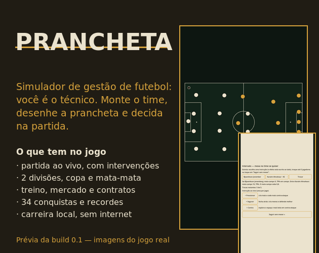

Prancheta
Simulador de gestão de futebol: você é o técnico — decide sem jogar.

O que é o Prancheta
Prancheta é um simulador de gestão de futebol em português do Brasil. Você não controla os jogadores em campo: escolhe o elenco, define a semana de treinos e decide como o time vai jogar. A partida é simulada diante de você — com momentos para trocar atletas e dar uma instrução tática aos 45'.
Comece uma carreira numa liga de duas divisões e conduza seu clube por temporada após temporada: escalação manual, contratos e empréstimos, finanças, copa nacional, conquistas e a prancheta para escolher sistema, estilo e padrões de jogo. Tudo num mundo fictício gerado por semente para cada carreira — sem clubes, jogadores ou escudos reais.
Narração lance a lance, placar ao vivo e janelas de decisão: até 5 trocas na partida e uma instrução tática.
Sem conta, sem compra e sem internet para jogar. No navegador ou no APK Android, com save local.
Duas divisões, copa, Data FIFA, mercado com contratos e empréstimos, finanças, conquistas e recordes.
Texto ajustável (16/18/20), modo daltônico e alvos de toque grandes. A primeira semana é um guia do primeiro jogo.
Como jogar
- No navegador: clique em Jogar no navegador acima (na página do itch.io, é o botão Run game). O som começa depois do primeiro toque — regra dos navegadores.
- No Android: baixe o APK na página do itch.io e toque para instalar; o sistema pede para permitir a instalação de apps de fora da Play Store — é normal, o jogo não está em loja. Depois é só abrir "Prancheta".
- Primeira vez: a semana inicial funciona como um guia do primeiro jogo, com quatro passos e atalhos de treino e prancheta. Se algo travar ou confundir, escreva nos comentários da página do itch.io — o retorno muda o jogo.
Ficha
- Versão: 0.1 (lançada em 06/10/2026)
- Gênero: futebol · gestão · simulação
- Plataformas: HTML5 (navegador) e Android (APK)
- Idioma: português do Brasil
- Motor: Godot 4.5 · Preço: grátis
- Privacidade: política de privacidade
Acompanhe
- itch.io (comentários e feedback): rebocl-brank.itch.io/prancheta
- YouTube: canal Rebocl Brank · trailer
- Bluesky: @reboclbrank.bsky.social
- Mastodon: @ReboclBrank@mastodon.social
- Discord (comunidade e feedback): discord.gg/AnJr5nqx4K